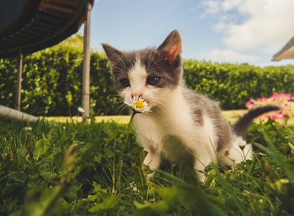
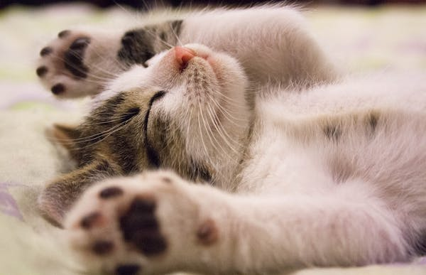
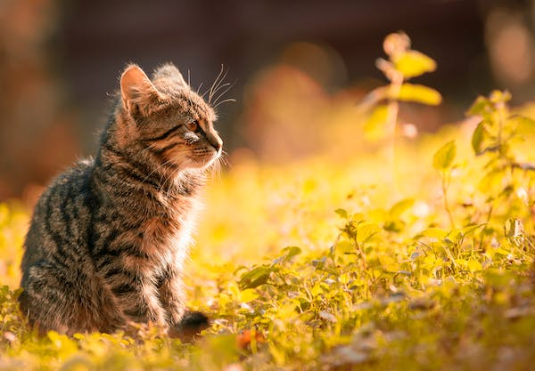
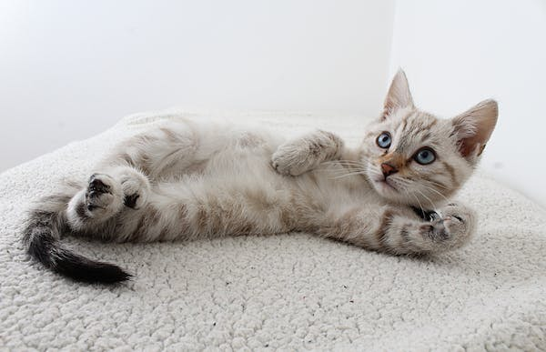

CMST Project 1 - Zoe Chalk
Home
Project 1
Gallery
Cat Images
Here is an example gallery of cats:
Cat Images

Small white and gray cat
smelling a white and yellow flower.

Small white and gray cat
laying on its back.

Small gray tabby cat
in a bright field.

Small white and cream cat
laying on its back.